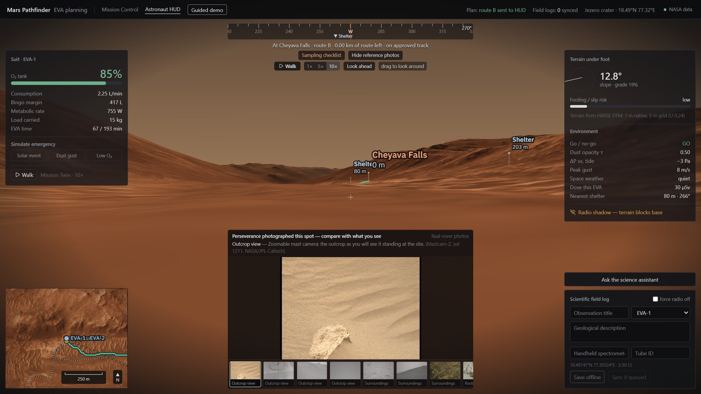
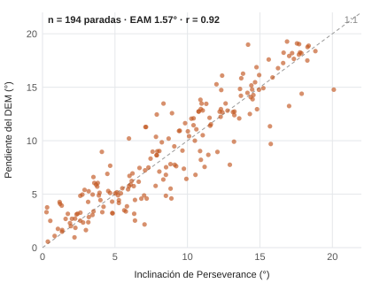
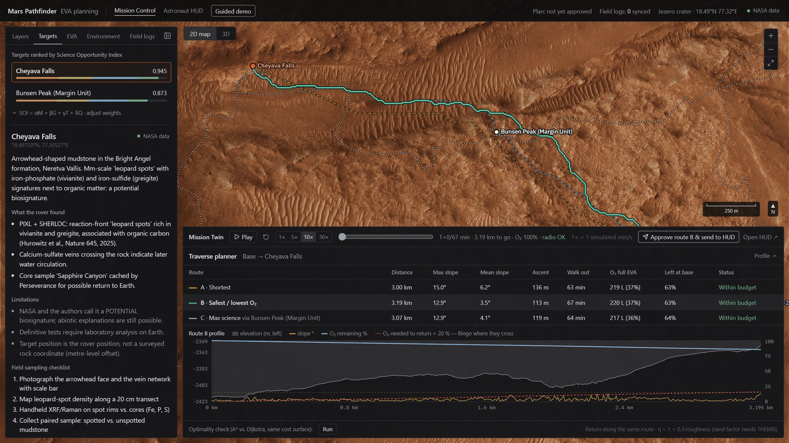
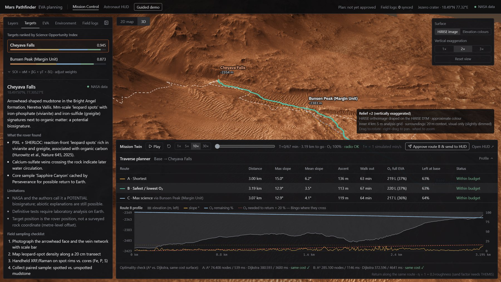
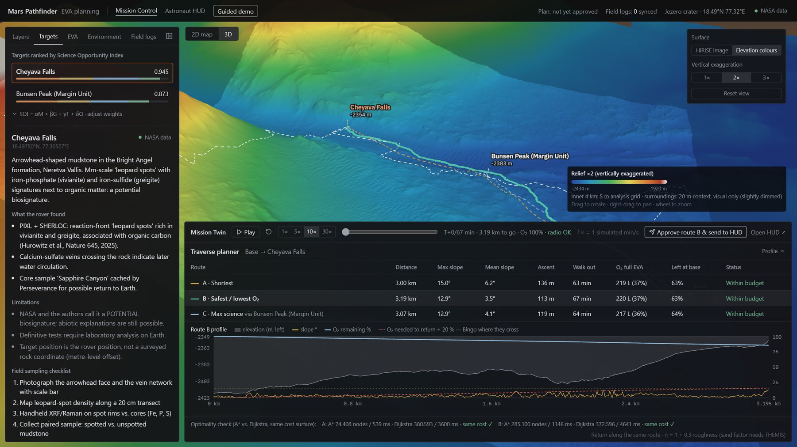
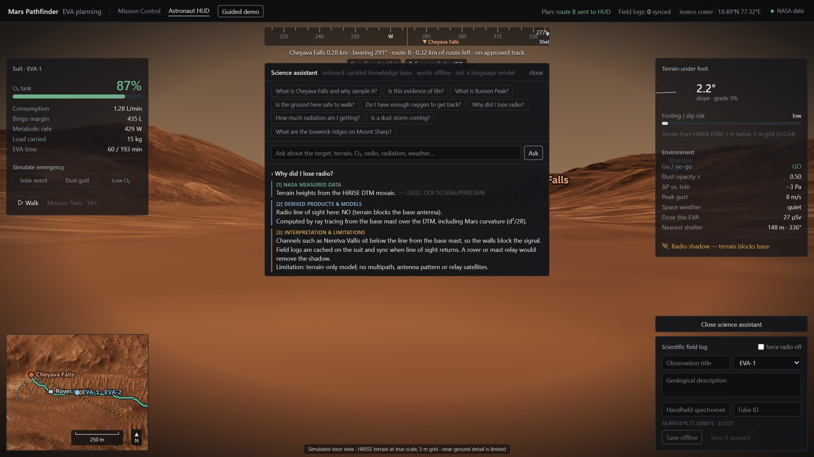
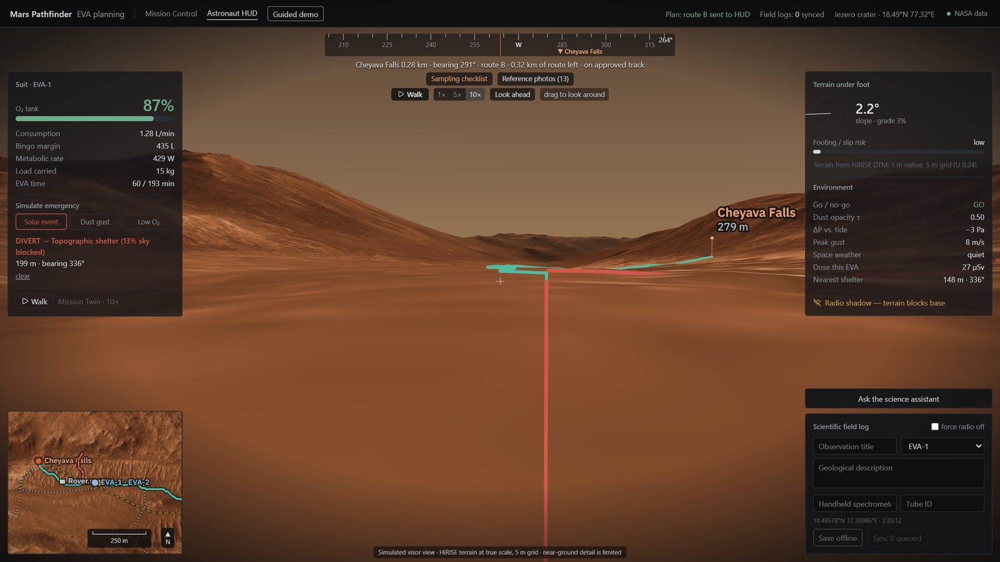
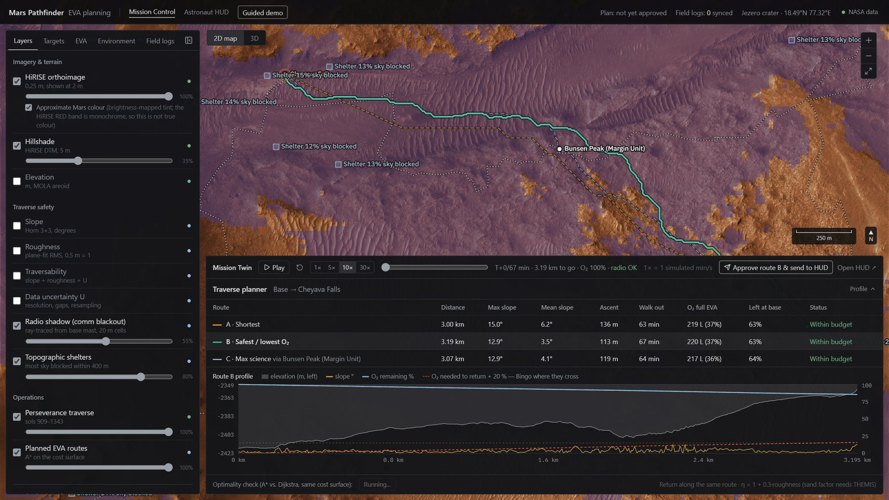
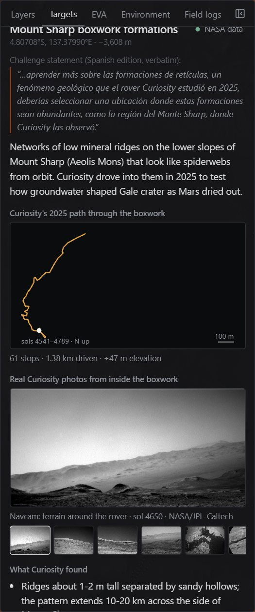

| Proyecto | Mars Pathfinder |
| Equipo | [Team name / Nombre del equipo] |
| Integrantes | [Members / Integrantes] |
| Reto oficial | Guía de supervivencia interplanetaria: Mapa de Marte |
| Solución | Aplicación web con dos vistas sincronizadas: Mission Control (planificación) y Astronaut HUD (visor del casco) |
| Enlaces | App: https://mars-beta-fawn.vercel.app Código: https://github.com/BobDylan8597/Mars Video: [Video link / Enlace al video] |
Mars Pathfinder convierte datos orbitales y de rovers de la NASA en un plan caminable para una EVA de unos 3 km en el cráter Jezero, y en un visor de casco que guía a la tripulación en la superficie. Sobre el modelo de terreno HiRISE de 1 m del USGS calcula pendientes, zonas transitables, tres rutas alternativas con A*, el consumo de oxígeno y el punto de no retorno (Bingo O₂), la cobertura de radio y los refugios topográficos. Su resultado principal es verificable: la pendiente que calcula coincide con la inclinación que registró el propio Perseverance en 194 paradas (error medio 1.57°, r = 0.92).
Las herramientas existentes (Mars Trek, mapas del USGS) combinan capas a escala regional o global. Un astronauta con traje presurizado, carga y oxígeno limitado necesita decisiones a escala de metros: ¿qué pendiente puedo subir?, ¿me alcanza el oxígeno para volver?, ¿dónde pierdo la radio?, ¿dónde me refugio si llega un evento solar?
Objetivo general: crear una herramienta hiperlocal que una datos de varias misiones de la NASA para planificar y ejecutar una EVA segura y científicamente productiva.
Mission Control (planificación en el hábitat): mapa del área de 4×4 km en 2D y 3D con capas de imagen, topografía, pendiente, rugosidad, transitabilidad, incertidumbre, sombra de radio y refugios, cada una con su insignia de procedencia; objetivos científicos ordenados por un Índice de Oportunidad Científica (SOI) ajustable; tres rutas (más corta, más segura, máxima ciencia) con perfil de elevación, pendiente y O₂; configurador de la EVA (carga, velocidad, pendiente máxima, tanque); reglas de clima previas a la EVA; y un Mission Twin que simula la caminata.
Astronaut HUD (visor del casco): el terreno real a escala verdadera visto desde 1.7 m en la posición del astronauta, con la ruta, el objetivo y los refugios superpuestos en su lugar; brújula que sigue la mirada; O₂, margen Bingo, inclinómetro y alertas; fotos reales de Perseverance como referencia al llegar; bitácora científica que guarda los registros en el traje cuando no hay radio y los sincroniza al recuperar la línea de vista; simulación de emergencias con desvío automático; y un asistente científico sin conexión que separa datos medidos, productos derivados e interpretación.
Lo que la distingue: cada número en pantalla lleva su fuente o la etiqueta de modelo/supuesto; la pendiente está validada contra el rover; y la planificación (Mission Control) y la ejecución (HUD) comparten el mismo estado, incluso sin conexión.
| Dato | Fuente | Uso |
|---|---|---|
| Modelo digital de terreno HiRISE, 1 m | USGS, Mars 2020 TRN, DOI 10.5066/P9REJ9JN (CC0) | Topografía, pendiente, rugosidad, rutas, línea de vista, refugios, 3D |
| Ortomosaico HiRISE, 25 cm | USGS, DOI 10.5066/P9QJDP48 | Capa óptica y textura 3D |
| Waypoints de Perseverance | NASA MMGIS (M20_waypoints.json) | Ruta real del rover, posición de objetivos, validación con inclinación |
| Imágenes sin procesar de Perseverance | API Mars 2020 raw images (recurso oficial del reto) | Fotos de referencia en cada objetivo |
| Waypoints e imágenes de Curiosity | NASA MMGIS (MSL) + API de imágenes MSL | Ficha de las retículas del Monte Sharp (2025) |
| Hallazgos de Cheyava Falls | Hurowitz et al., Nature 645, 332 (2025) | Ficha científica |
| Hallazgos de Bunsen Peak | NASA, abril 2024 | Ficha científica |
| Radiación en superficie | Curiosity RAD, Hassler et al., Science 343 (2014) | Presupuesto de dosis (medido en Gale) |
| Mars Trek, USGS, ruta de Curiosity, Worldview | Recursos oficiales del reto | Referencia de diseño y contexto; Worldview para el análogo terrestre |
Preparación de datos. El DTM (1.8 GB) y el ortomosaico (7.4 GB) del USGS se leen a distancia solo en la ventana de trabajo y se remuestrean a celdas de 5 m (800×800 = 640 000 celdas), corrigiendo la escala de la proyección equirectangular a 18.5° de latitud. Un área de contexto de 10 km a 20 m se usa solo para visualización.
Métodos. Pendiente por el método de Horn; rugosidad como residuo de un plano ajustado 3×3; índice de incertidumbre U según resolución, huecos y remuestreo (las celdas sin datos nunca se clasifican como seguras); rutas con A* sobre una función de costo multicriterio, verificadas con Dijkstra; consumo metabólico con la ecuación de Pandolf (1977) escalada a la gravedad de Marte (3.721 m/s², sin escalar el término basal) y O₂ a 20.1 kJ por litro; Bingo O₂ = O₂ restante ≤ 1.2 × O₂ necesario para volver; línea de vista de radio por trazado de rayos con curvatura de Marte; refugios por fracción de cielo bloqueada en 16 direcciones; y reglas de clima transparentes (no un pronóstico).
Supuestos declarados: masa del traje, penalización por traje presurizado y tamaño del tanque; puntajes del SOI asignados por el equipo; dosis RAD medida en Gale y aplicada a Jezero; base de operaciones elegida por el equipo sobre el DTM (no es un sitio de la NASA); tinte de color aproximado (la banda RED de HiRISE es monocromática); exageración vertical del 3D indicada en pantalla.

Validación del terreno. En 194 paradas reales de Perseverance (soles 909–1343) comparamos la pendiente calculada sobre el DTM con la inclinación que midió el propio rover: el error medio es de 1.57° y la correlación r = 0.92. La inclinación del rover también refleja rocas bajo las ruedas, por lo que no se espera un acuerdo perfecto. La elevación coincide en centímetros, pero esa cifra no es independiente porque la localización del rover se apoya en el mismo terreno HiRISE.
Rutas a Cheyava Falls (escenario por defecto: 15 kg de carga, 0.8 m/s, 60 min de trabajo científico, pendiente máxima 15°, 600 L de O₂ utilizable — supuesto):
| Ruta | Distancia (km) | Pendiente máx. | Pendiente media | Ascenso (m) | Ida (min) | O₂ EVA completa (L) | O₂ al volver |
|---|---|---|---|---|---|---|---|
| A · Más corta | 3.00 | 15.0° | 6.2° | 136 | 63 | 219 (37%) | 63% |
| B · Más segura | 3.19 | 12.9° | 3.5° | 113 | 67 | 220 (37%) | 63% |
| C · Máxima ciencia (vía Bunsen Peak) | 3.07 | 12.9° | 4.1° | 119 | 64 | 217 (36%) | 64% |
La ruta segura es solo un 6% más larga y baja la pendiente media de 6.2° a 3.5° con casi el mismo oxígeno: la planificación mejora la seguridad sin costo de O₂. A* encontró el mismo costo óptimo que Dijkstra expandiendo 5 veces menos nodos en la ruta A (74 408 frente a 380 593).








Limitaciones y trabajo futuro: un área de 4×4 km; rocas menores que la celda de 5 m no se detectan (próximo paso: detección sobre la ortoimagen de 25 cm); capas THEMIS y de geología del USGS no cargadas; modelo metabólico no validado para trajes presurizados; telemetría del traje y clima simulados; sin rutas en Gale por falta de DTM cargado; generalizar a cualquier sitio con DTM de HiRISE.
Herramientas: Next.js, React, TypeScript, Tailwind CSS, Three.js, Recharts, Zustand, Vitest; Python (NumPy, rasterio/GDAL, Pillow); Vercel; GitHub.
Uso de inteligencia artificial: el equipo usó Claude Code (Anthropic) como asistente para diseñar, escribir código, revisar fuentes de datos y redactar la documentación. Las decisiones, la verificación de datos y los resultados fueron revisados por el equipo. La aplicación no ejecuta ningún modelo de IA: el asistente científico es una base de conocimiento curada que funciona sin conexión.
Imágenes y datos: NASA/JPL-Caltech, Universidad de Arizona (HiRISE), USGS Astrogeology, MSSS. La NASA no respalda este proyecto.